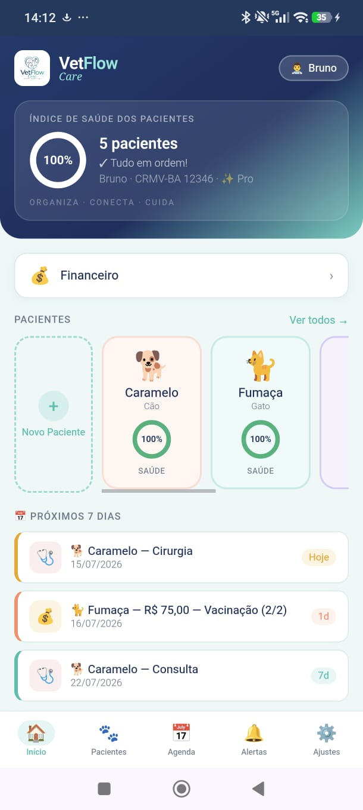

Antes da visita
Organize a agenda, consulte os compromissos e prepare a rota dos atendimentos externos.
Agenda e rota do dia
Agenda, pacientes e prontuários reunidos
para acompanhar você em cada visita.

O VetFlowCare reúne as informações que você precisa antes, durante e depois da visita. Tudo conectado ao cuidado de cada paciente.
Organize a agenda, consulte os compromissos e prepare a rota dos atendimentos externos.
Agenda e rota do diaAcesse o histórico do paciente, registre a consulta e prepare receitas com seus dados profissionais.
Prontuário e documentosAcompanhe vacinas, retornos e valores a receber, mantendo os próximos cuidados organizados.
Acompanhamento e financeiroExplore as telas reais e veja como o VetFlowCare ajuda a organizar o seu dia.
Acompanhe seus pacientes e os próximos cuidados na tela inicial.

Os dados já cadastrados no aplicativo ajudam a preencher os documentos, deixando a prescrição e a avaliação clínica com você.

Cadastre seus pacientes, organize os próximos atendimentos e experimente os recursos com calma.
Começar minha experiênciaAplicativo completo durante o período gratuito.Após o período de experiência, conte com o Plano Pro para seguir com sua gestão.
Algumas informações para você começar com tranquilidade.
Falar com a equipeSim. O VetFlowCare é um aplicativo PWA, instalado pelo navegador. No iPhone, abra no Safari, toque em Compartilhar e em Adicionar à Tela de Início. No Android, use a opção de instalação do navegador.
Sim, os registros locais ficam disponíveis sem conexão. Serviços externos, como WhatsApp e navegação por mapas, podem precisar de internet.
Exporte um backup no aparelho atual, guarde-o em um local seguro e restaure no novo dispositivo. Cada aparelho mantém sua própria cópia dos dados.
Crie sua conta no aplicativo para experimentar os recursos por 30 dias, sem cartão. Depois, converse com a equipe para continuar com o Plano Pro.
Dicas clínicas, rotina de quem atende em domicílio e bastidores do VetFlowCare, publicados toda semana pela Dra. Gabriela.